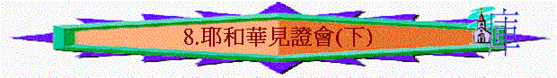
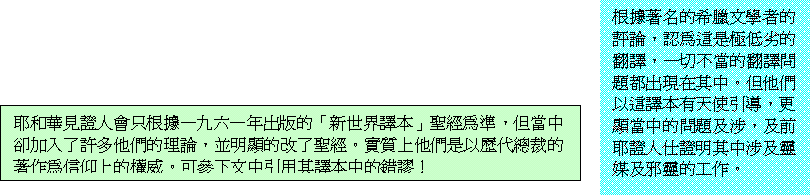
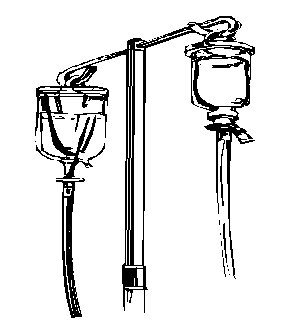
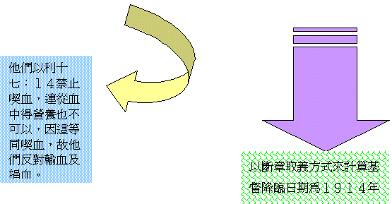
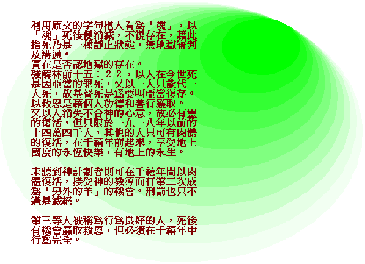
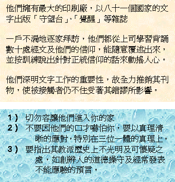

[ Home ] [ Up ] [ 1.偏差溯源 ] [ 2.大公教會(上) ] [ 3.大公教會(中) ] [ 4.大公教會(下) ] [ 5.摩門教(上) ] [ 6.摩門教(下) ] [ 7.耶和華見證人會(上) ] [ 8.耶和華見證會(下) ] [ 9.基督復臨安息日會(上) ] [ 10.基督復臨安息日會(下) ]
第八課：耶和華人見證會（下）
Ｃ）真理的曲解：
- 偏差的翻譯

．．
 |
 |
２）偏激的觀點：
ａ）否三位一體
ｂ）否基督神性
ｃ）否救恩需要

Ｄ）傳教的方法

[ Home ] [ Up ] [ 1.偏差溯源 ] [ 2.大公教會(上) ] [ 3.大公教會(中) ] [ 4.大公教會(下) ] [ 5.摩門教(上) ] [ 6.摩門教(下) ] [ 7.耶和華見證人會(上) ] [ 8.耶和華見證會(下) ] [ 9.基督復臨安息日會(上) ] [ 10.基督復臨安息日會(下) ]